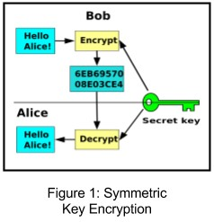
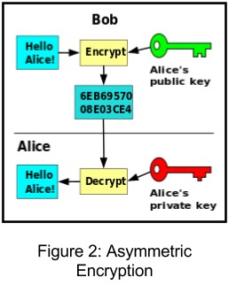

Introduction
Recently there has been an uproar in the networking community because of an encryption protocol called WPA2, which is the most secure form of wifi-encryption currently available, being broken. This was due to the publication of the "Krack Article" which was released detailing certain aspects of the attack but stopping short of explaining it in full. This was to give companies time to patch the vulnerabilities before it affected their users.
Key People
Krack Article
Mathy Vanhoef
Mathy is a post-doctoral researcher at KU Leuven, where he looks at how vulnerabilities in network protocols can be automatically detected.
Frank Piessens
Frank is a professor at KU Leuven. His research interests include software security.
WEP Insecurities
Nikita Borisov
Nikita is a research professor at the University of Illinois. His research interests are network security and online privacy.
Ian Goldberg
Ian is currently a professor at the University of Waterloo. He is also known for breaking the Netspace implementation of SSL.
David Wagner
David is currently a professor at the University of California. His research interests include cryptography.
History
Wired Equivalency Protocol (WEP) was one of the first widely used encryption protocols that provided confidentiality when communicating with other computers over a network. However, encryption has a major flaw, as no matter what algorithm is used, the message will inevitably be decrypted. This means that hackers can always break encryption because encryption is built as a two-way system. This happened with WEP in 2001 with a paper from the University of California Berkeley that was published detailing its weaknesses. It states that the main problems with WEP is that:
"the initialization vector in WEP is a 24-bit field, which is sent in the cleartext part of a message. Such a small space of initialization vectors guarantees the reuse of the same key stream."(1) "This allows an attacker to collect two ciphertexts that are encrypted with the same key stream and perform statistical attacks to recover the plaintext." (1)
Essentially, this states that through the reuse of keys due to a small sample space, a statistical analysis can be conducted in order to get the wifi password. This paper began the change from WEP to WiFi Protected Access (WPA). Originally created as an addition to WEP, it became its own security protocol with WPA2. WPA was the patch that developers put out in order to secure WEP. The main addition was the use of TKIP or Temporal Key Integrity Protocol which provides a unique encryption key for every packet sent across a network, preventing key attack as the packet keys depend on another randomized key made of the session key and initialization vector.
What is Encryption?
To understand how Krack works, we need to understand a few networking concepts. One of these concepts is encryption. Encryption is a method of securing information when sending data across the internet so that your data is not stolen. An example of this would be sending your password over a network when attempting to login to a website. While you need to send the password, you don’t want malicious users to know what your password. By using your encryption, when your password was sent across the network it would become a garbled mess of text and thus if it was stolen, your information would not be lost. Also when it reaches the website, the website could transform the garbled data into your password and let you enter the site. There are only two main ways of encrypting data, either using symmetric encryption (secret key encryption) or asymmetric encryption (public key encryption).
Symmetric Encryption
If we used symmetric encryption in our networking example, the client would first encrypt the data using a key and then send it to a server which would be able to decrypt it by using the same key the client used. This method of encryption is the simplest as it only involves one key but relies on both parties already knowing the key. This is fine if you can safely transfer the key to the other party, however if you are unable to transfer the key safely, you can use asymmetric encryption.
Asymmetric Encryption
In asymmetric encryption, you have two keys. One is the public key, which is publicly available, and the other is the private key which is never given out. The public key encrypts messages that only the private key can decrypt and vice versa. The public key and private key together are known as a key pair. Asymmetric encryption allows you to send information across the network that is encrypted, but only people with the private key will be able to decode your information. In this way, you do not have to agree on a predetermined key in order to communicate securely with somebody. This means that we would simply encrypt our password with the public key and send it to the website and only they would be able to decrypt it as they have the private key.
Moreover, asymmetric encryption can be used as a verification tool in the form of a technique called PGP (Pretty Good Privacy) . In our networking example let us have two key pairs called KeyA and KeyAA and KeyB and KeyBB, where Key Pair A belongs to the client and Key Pair B belongs to the server. Also Key A and Key B are the public keys and are available to everyone while Key AA and Key BB are private keys. If the client uses his private key (Key AA) to encrypt data, we know that the data is from the client. If he then encrypts it again with the server’s public key (Key B) and sends it the server, the server is able to decrypt the data and know that it is truly the client who sent him this data. This is a major advantage for public-key encryption as it can act as a verification tool as well as ensuring that data sent is securely transmitted.
Krack
4-Way Handshake
A concept that needs to be understood before delving into Krack is the 4-way handshake. The 4-way handshake plays a crucial part in networking authentication as it allows a wifi access point and a computer to authenticate each other by proving they both know the Pairwise Master Key (PMK). They do this by encrypting their messages so that they can only be decrypted by a computer or access point that knows the PMK. However, as the PMK needs to be shared during the entire time the computer and access point communicate with each other, another key is needed to encrypt this process. This key is called a Pairwise Temporal key (PTK) and is what Krack takes advantage of. The PTK uses pieces of data such as the PMK, the MAC address of your computer and the access point as well as some random numbers (anonce and snonce) to generate a number. This number is then put through a pseudo random algorithm to come up with the PTK. In order for the access point and computer to encrypt their traffic in the same manner, the 4-way handshake shares these parts of the PTK with each other in order to construct the PTK individually and be able to communicate securely.
The Issue
As you can see, wifi protocols have been broken before and recently WPA2 was broken by a key reinstallation attack, or krack for short. In a paper discovered by Mathy Vanhoef and Frank Piessens of imec-DistriNet, KU Leuven, the introduce this new concept. It states that:
"All protected Wi-Fi networks use the 4-way handshake to generate a fresh session key. So far, this 14-year-old handshake has remained free from attacks, and is even proven secure. However, we show that the 4-way handshake is vulnerable to a key reinstallation attack. Here, the adversary tricks a victim into reinstalling an already-in-use key. This is achieved by manipulating and replaying handshake messages. When reinstalling the key, associated parameters such as the incremental transmit packet number (nonce) and receive packet number (replay counter) are reset to their initial value." (2)
"The impact depends on the handshake being attacked, and the data-confidentiality protocol in use." (2)
Essentially what the paper is stating is that the 4-way handshake used in order to generate session keys is vulnerable. By throwing errors and saying that you missed certain handshakes, you can reset certain values to predictable numbers and use these numbers to mess with the encryption process in ways that were not intended. By manipulating these handshakes, depending on what handshake is used, we can get different parts of each encryption method and use them in different ways. This is because there is no standard for how networks deal with re-transmitting passwords. This causes certain operating systems such as Windows and Mac OS to not accept retransmitted handshake messages and others to accept them such as Android 6.0. However, if you are worried about your data being stolen, don’t be alarmed yet.